Conversemos
Escríbenos por WhatsApp. Cuéntanos qué servicio te interesa y coordinamos tu visita.
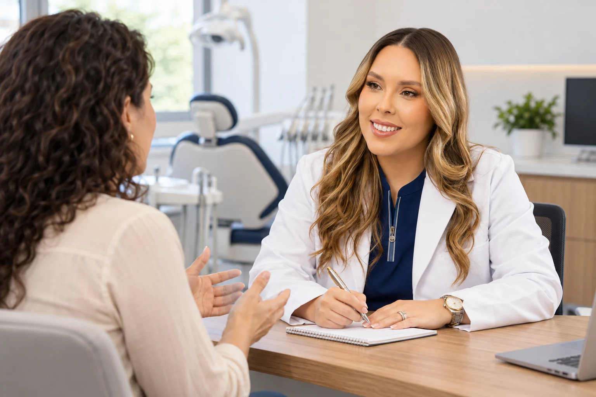
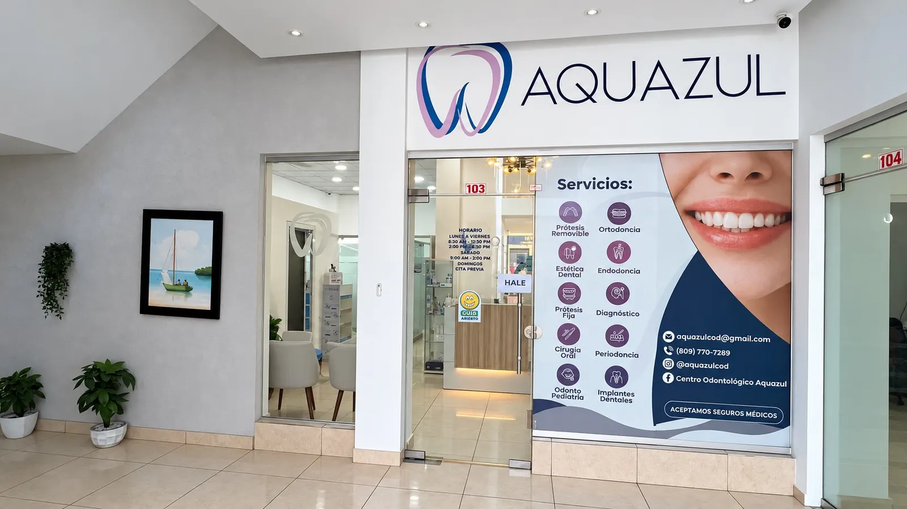
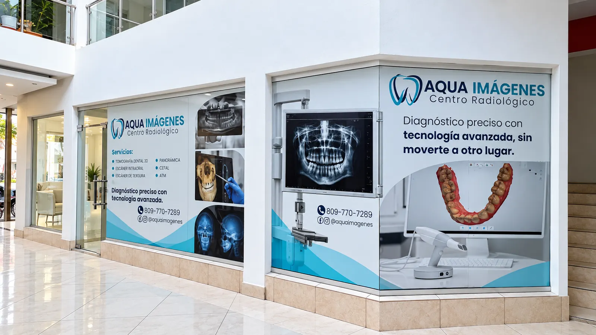
CENTRO ODONTOLÓGICO · LA ROMANA
En Centro Odontológico Aquazul combinamos atención personalizada, profesionales especializados y tecnología digital avanzada para cuidar tu salud bucal y transformar tu sonrisa.
BIENVENIDO A AQUAZUL
Sabemos que detrás de cada sonrisa hay una persona, una historia y muchas razones para sentirse bien.
Por eso, empezamos escuchándote. Te explicamos tus opciones con claridad y construimos contigo un plan de cuidado que responda a lo que necesitas.
Conoce a nuestro equipoEscena ilustrativa creada con IA a partir de fotografías del Dr. Víctor; no documenta una consulta real.
ATENCIÓN INTEGRAL
Explora cada área y descubre las opciones que podemos valorar contigo. El plan se define después de una evaluación profesional.
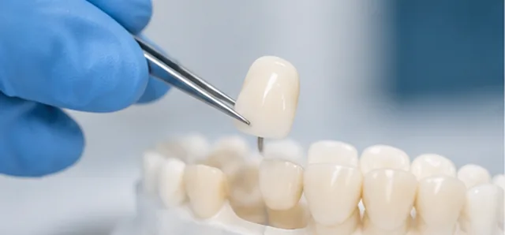
01Recuperar función, comodidad y armonía al sonreír.
Ver tratamientosRestauraciones y prótesis planificadas para las necesidades de cada paciente.
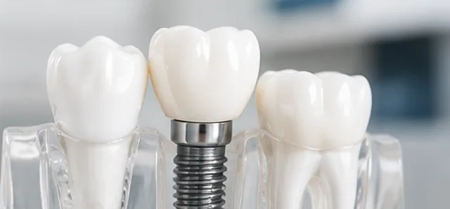
02Opciones para reemplazar dientes ausentes.
Ver tratamientosLa valoración permite definir si un tratamiento con implantes es apropiado.
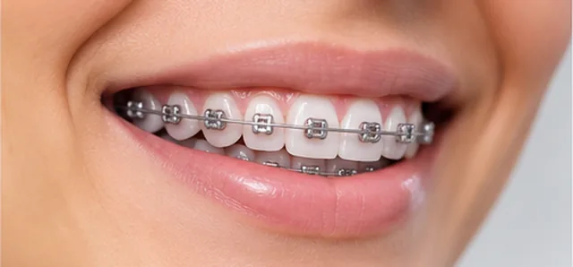
03Acompañamos la evolución de cada sonrisa.
Ver tratamientosAlternativas de alineación y desarrollo maxilar para distintas etapas de la vida.
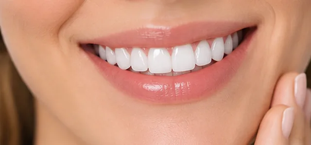
04Detalles que transforman tu sonrisa.
Ver tratamientosUna propuesta estética que empieza por la evaluación de tu salud bucal.
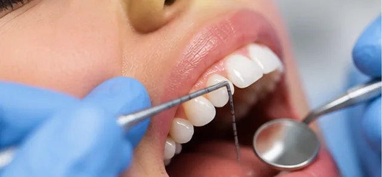
05Cuidar la base de una sonrisa sana.
Ver tratamientosAtención a las encías y a los tejidos que sostienen los dientes.
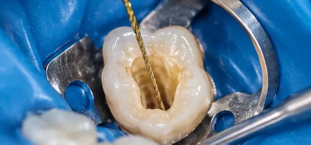
06Conservar el diente natural cuando es posible.
Ver tratamientosEvaluación y tratamiento del interior del diente según cada caso.
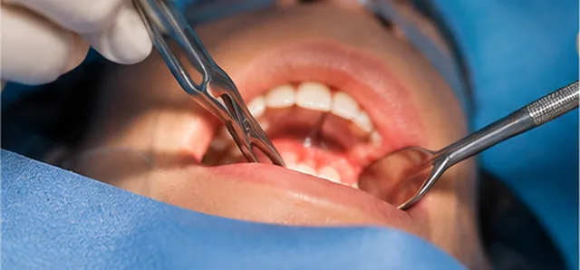
07Procedimientos guiados por una valoración precisa.
Ver tratamientosOpciones quirúrgicas indicadas de acuerdo con el diagnóstico profesional.
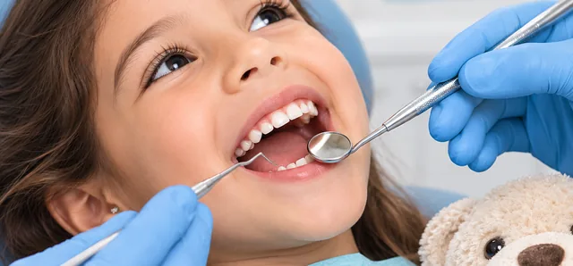
08El cuidado cotidiano también cuenta.
Ver tratamientosEvaluaciones, prevención y seguimiento para cada etapa de tu salud bucal.
Fotografías ilustrativas facilitadas por Aquazul; no muestran necesariamente pacientes ni profesionales de la clínica.
Los tratamientos se indican según la valoración clínica; consulta disponibilidad y condiciones de cada servicio antes de agendar.
SIN PRISA. CON CONFIANZA.
Tu primera visita empieza con una conversación. Cuéntanos qué te preocupa y qué esperas de tu sonrisa; tras la evaluación, te explicaremos las opciones y resolveremos tus dudas antes de dar el siguiente paso.
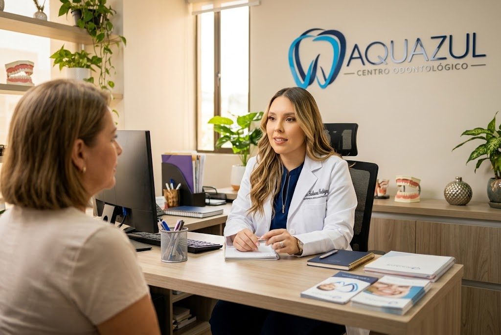
Escríbenos por WhatsApp. Cuéntanos qué servicio te interesa y coordinamos tu visita.

El equipo conoce tus necesidades y realiza una evaluación de tu salud bucal.
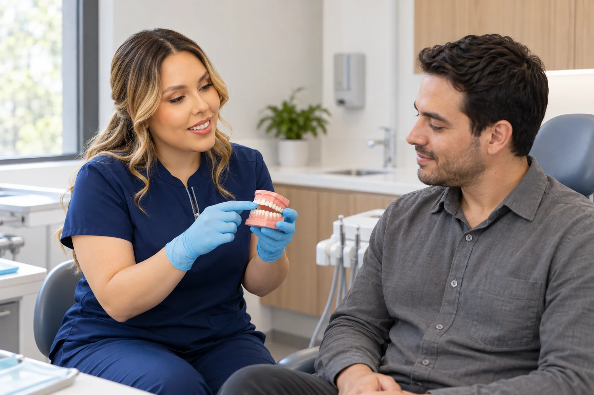
Te explicamos las opciones y resolvemos tus dudas antes de dar el siguiente paso.
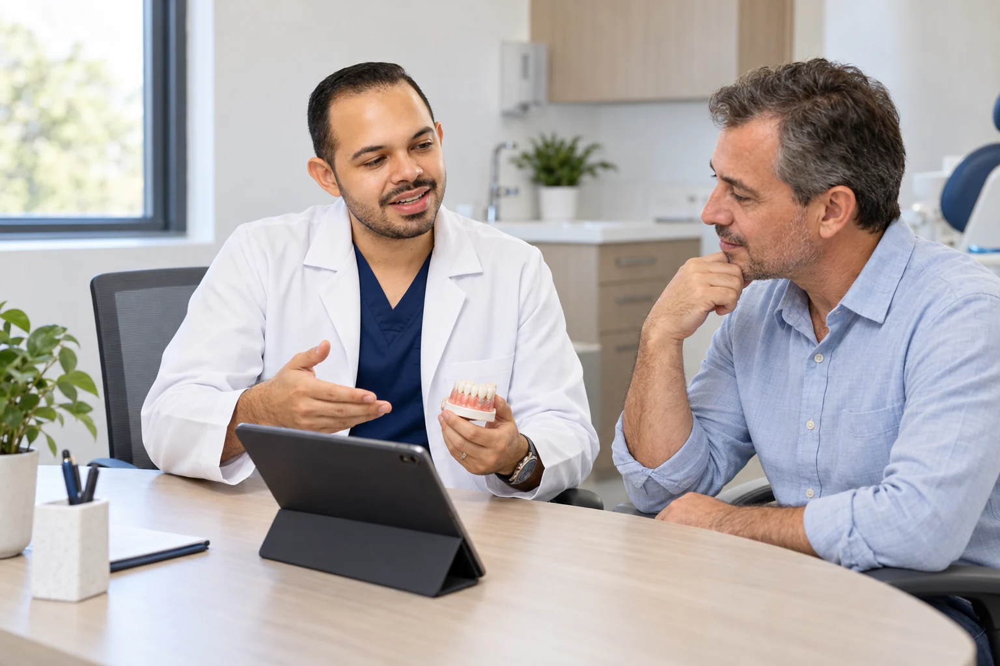
Escenas ilustrativas creadas con IA a partir de fotografías facilitadas de los doctores; no documentan consultas reales.
CONOCE A NUESTROS PROPIETARIOS
Conoce a los profesionales al frente de Aquazul y su enfoque en el cuidado de tu salud oral.
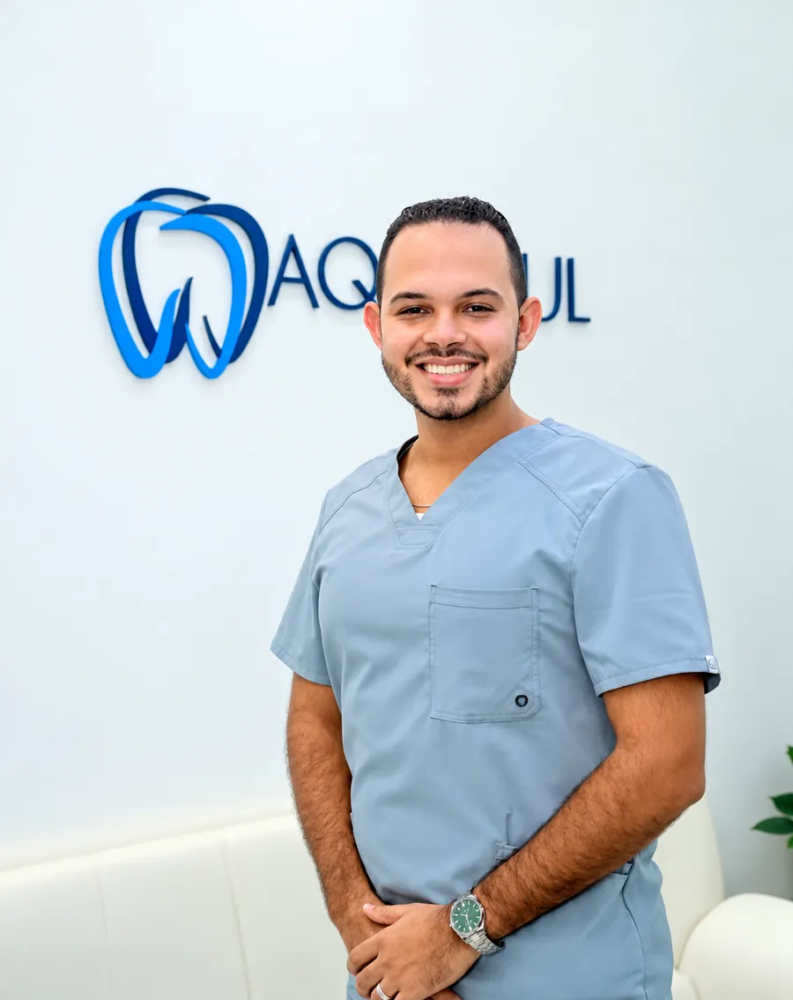
REHABILITACIÓN BUCAL E IMPLANTES
Rehabilitación Bucal e Implantes Dentales. Docente universitario en UNIBE.
Conoce su perfil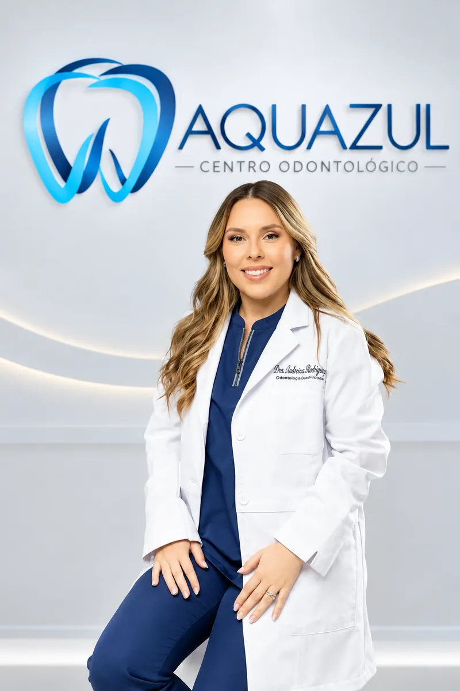
PROFESIONALES DE AQUAZUL
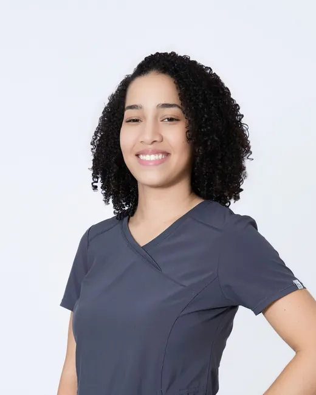
ODONTOLOGÍA INTEGRAL
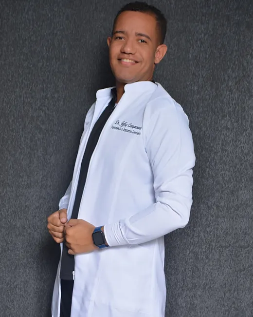
PERIODONCIA
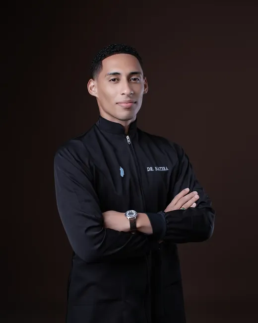
ODONTOLOGÍA INTEGRAL
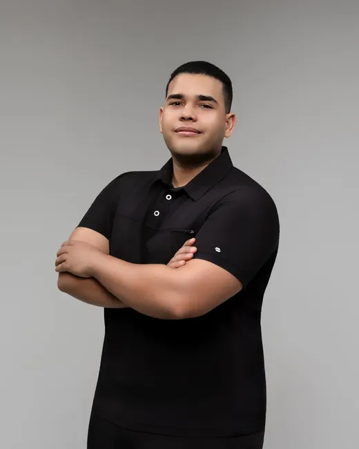
CIRUGÍA BUCAL
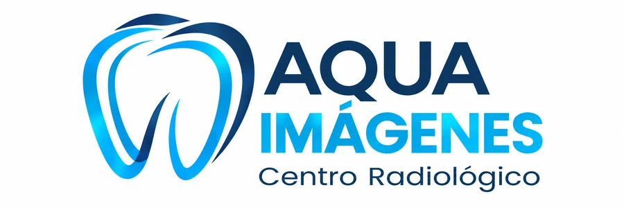
TECNOLOGÍA AL SERVICIO DE TU SONRISA
En nuestras renovadas instalaciones encontrarás la tecnología de última generación que tu odontólogo necesita para un diagnóstico preciso en un solo lugar.
Aqua Imágenes ofrece servicios tanto a pacientes de Aquazul como a pacientes referidos por otros profesionales odontológicos.
¡Tu salud bucal merece la mayor comodidad y precisión!
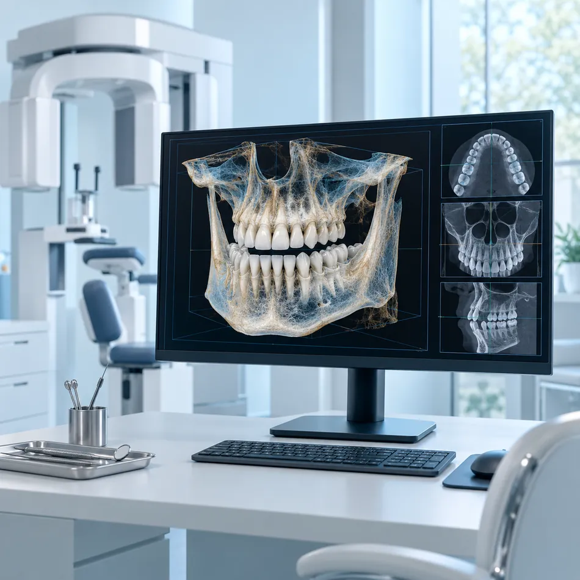
EXPLORA NUESTROS SERVICIOS
Una vista tridimensional que complementa la valoración indicada por tu odontólogo.
Consulta con el equipo los requisitos del estudio solicitado antes de tu visita.
El equipamiento que apoya estos estudios forma parte de nuestra experiencia digital.
Conoce la tecnología de Aqua ImágenesImágenes de estudios ilustrativas generadas con IA. No representan las instalaciones ni los equipos específicos de Aqua Imágenes.
LA CONFIANZA SE CONSTRUYE CONTIGO
GOOGLE · EXTRACTO DE RESEÑA
«te hacen sentir seguridad y confianza»Ver perfil del autor en Google ↗
GOOGLE · EXTRACTO DE RESEÑA
«Profesionales muy capacitados y con un trato muy humano.»Ver perfil del autor en Google ↗
GOOGLE · EXTRACTO DE RESEÑA
«recomendado al 100% si quieres estar seguro»Ver perfil del autor en Google ↗
Voces reales. Experiencias personales.
Selección de extractos de reseñas públicas de Google. Calificación, cantidad y opiniones consultadas el 3 de octubre de 2026; pueden cambiar. Leer todas las opiniones.
TECNOLOGÍA AL SERVICIO DE TU CUIDADO
Herramientas digitales que apoyan el diagnóstico, la planificación y la precisión. Siempre al servicio de una atención personalizada.
Aqua Imágenes: estudios y servicios radiológicos ↗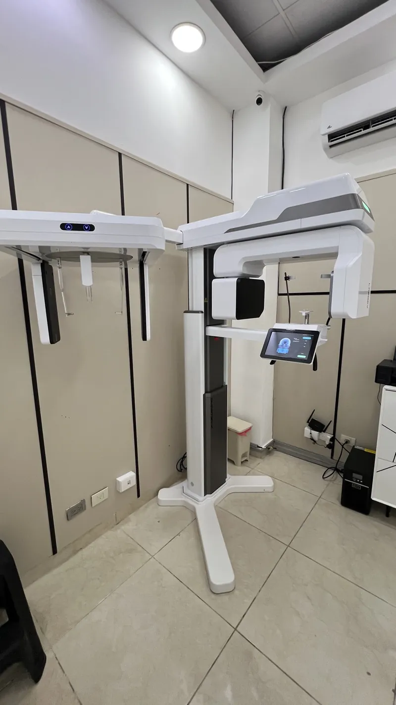
Cada tecnología se utiliza según la necesidad clínica y la disponibilidad del servicio. Tu odontólogo te explicará qué estudios o procedimientos corresponden a tu caso.
CASOS CLÍNICOS
Próximamente compartiremos casos documentados de nuestros pacientes.
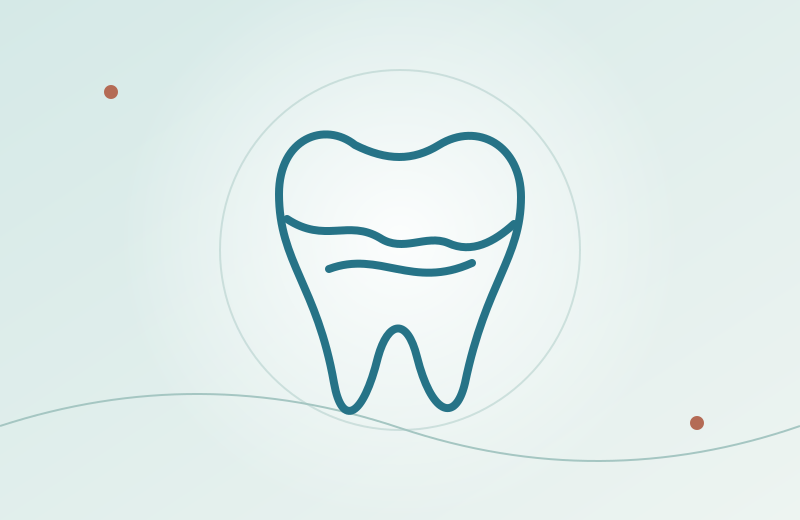
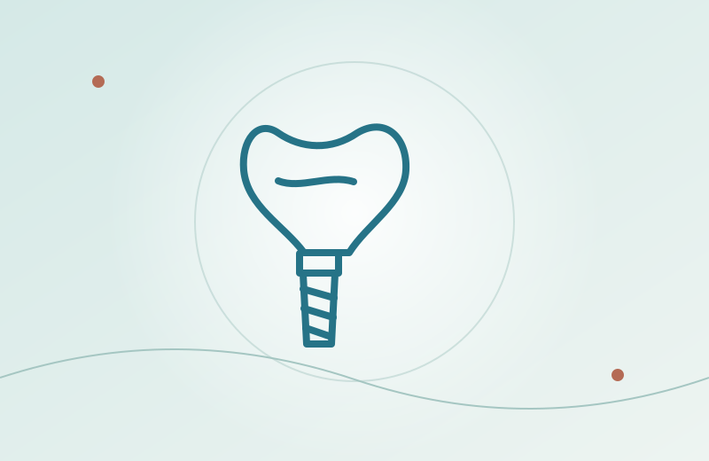
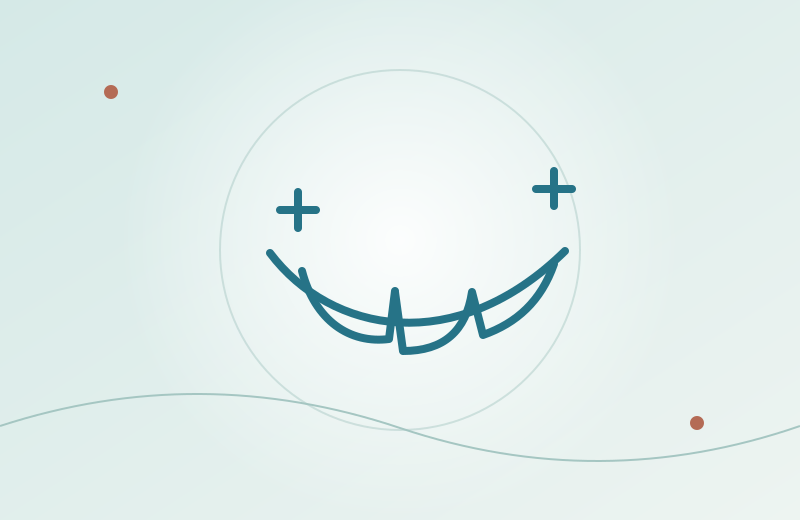
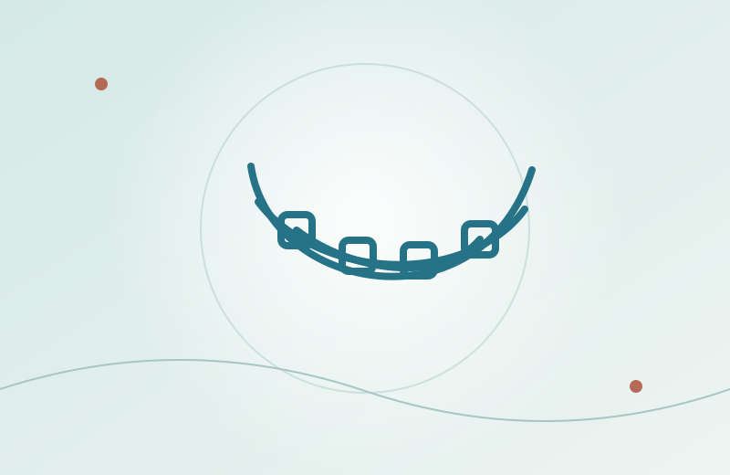
Las ilustraciones son provisionales: no muestran pacientes ni resultados clínicos. Publicaremos fotografías de antes y después únicamente cuando estén disponibles y autorizadas.
Puedes escribirnos por WhatsApp o llamarnos al +1 809-770-7289. Nuestro equipo confirmará contigo el día y la hora disponibles.
Nos encuentras en la Calle Dr. Gonzalvo #33, Downtown Plaza, Suite 103, La Romana, República Dominicana.
Al coordinar tu cita, consulta con el equipo qué documentos o estudios previos debes llevar según el motivo de tu visita.
Sí. Escríbenos para conocer las opciones de pago y la información de tu evaluación. El presupuesto de un tratamiento depende del plan indicado para ti.
Sí, puedes consultar disponibilidad por el mismo número de contacto. Aqua Imágenes es un centro radiológico independiente, ubicado junto a Aquazul.
ESTAMOS CERCA DE TI
VISÍTANOS
Calle Dr. Gonzalvo #33HORARIO
Lunes a viernes · 8:30 a. m. – 12:30 p. m. y 2:00 p. m. – 6:30 p. m.
Sábados · 9:00 a. m. – 2:00 p. m.
Domingos · cerrado
PLANIFICA TU VISITA
Consulta con nuestro equipo
los horarios disponibles
y coordina tu próxima cita.